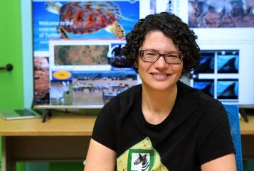

The H2O GenAI World 2024 New York conference brought experts, industry leaders, and researchers together at the NASDAQ building on Thursday Nov. 21 to explore the latest advancements in generative and predictive AI.
Among the event’s highlights was a keynote by Dr. Tanya Berger-Wolf, a professor at The Ohio State University and director of the Imageomics Institute, who spoke about AI’s transformative role in biodiversity conservation.
Berger-Wolf was also honored with an AI for Good/Research Scientist Award recognition during the conference for her efforts as a member of the US National Committee, and Director of the conservation non-profit Wild Me. As Founder of computational ecology and Co-founder Wildbook, she helped advance e an open source platform using AI to promote wildlife conservation.

Berger-Wolf, whose work spans computer science, electrical engineering, and ecology, presented “AI for Nature: From Science to Impact” on the Maryam-Curie Stage. She showcased how AI tools are being used to analyze visual data to monitor species, track population dynamics, and study ecosystems. Her research at the Imageomics Institute focuses on extracting biological traits from images, enabling scientists to identify patterns critical for preserving biodiversity.
“AI helps us scale our understanding of biodiversity and informs actionable conservation efforts,” she said. “This technology connects scientific research to real-world impacts, engaging policymakers and citizen scientists alike.”
Her presentation stood out in a day packed with technical workshops, panels, and product announcements. The event, led by H2O.ai CEO Sri Ambati, also featured the launch of H2O Generative AI and a multi-agent platform designed for enterprise deployment. Berger-Wolf’s talk complemented the broader themes of the event, emphasizing the importance of AI in solving global challenges.
Dr. Berger-Wolf, a member of the U.S. National Committee and an advocate for AI for Good initiatives, reminded attendees of the power of AI beyond traditional applications. Her work at Ohio State and Imageomics Institute continues to bridge disciplines, advancing technology to protect ecosystems and enhance conservation strategies.
The day concluded with networking sessions and the H2O AI 100 Awards Ceremony, recognizing innovators driving impactful AI solutions.